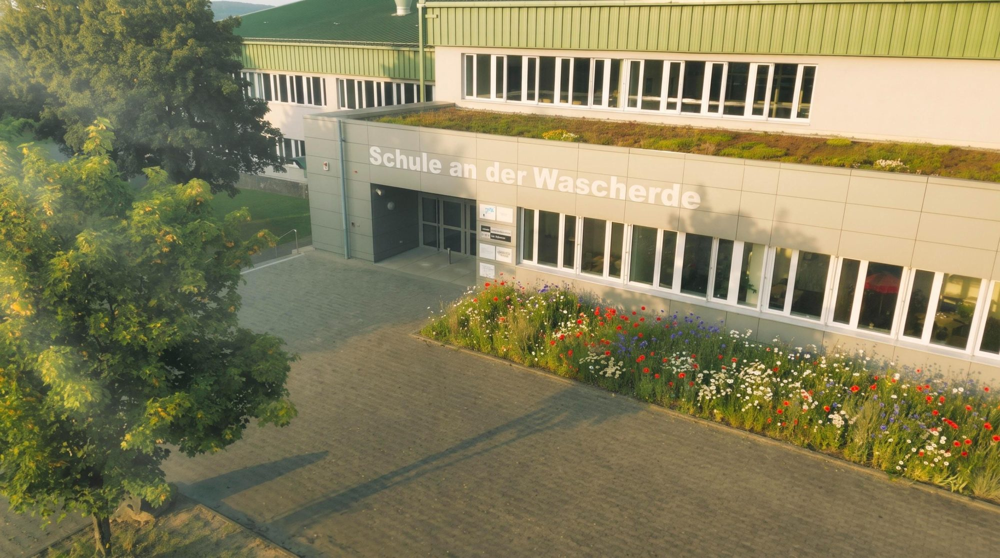
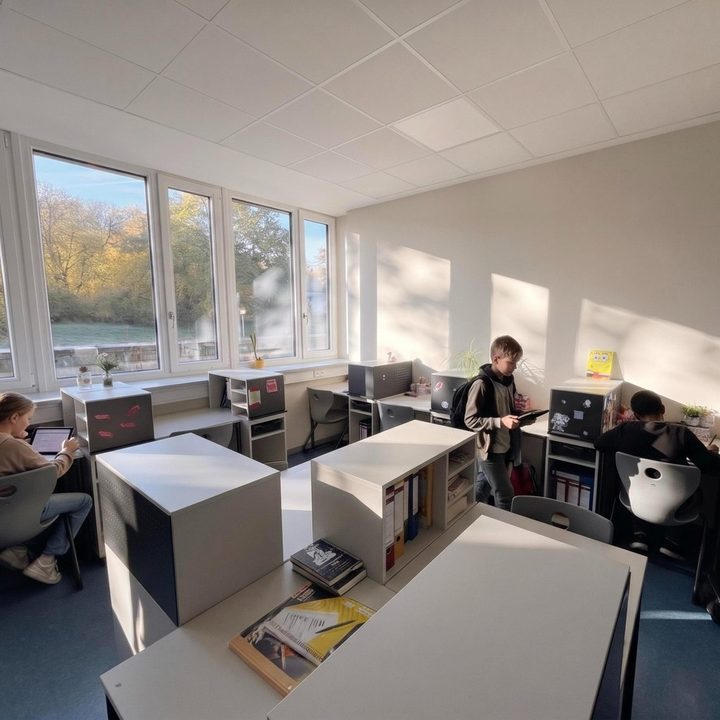
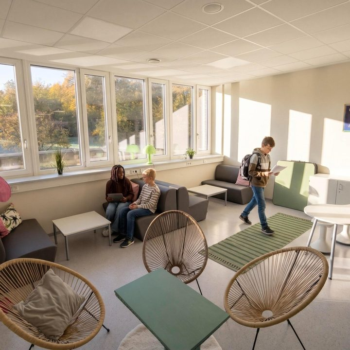
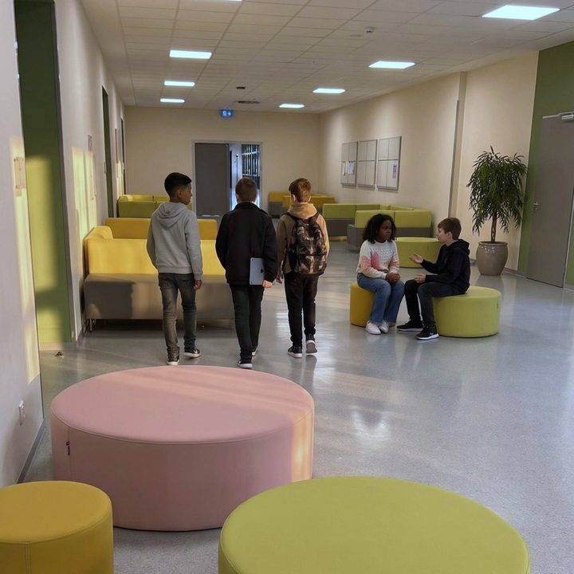
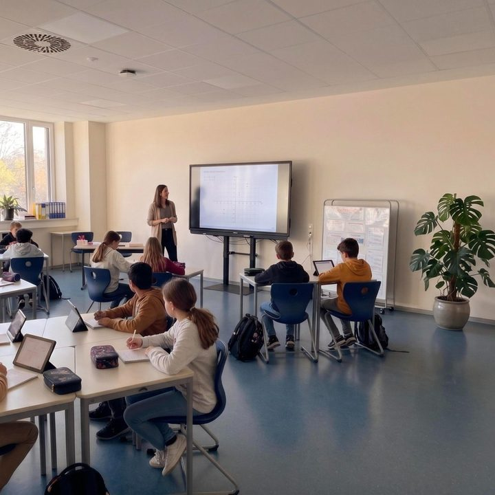
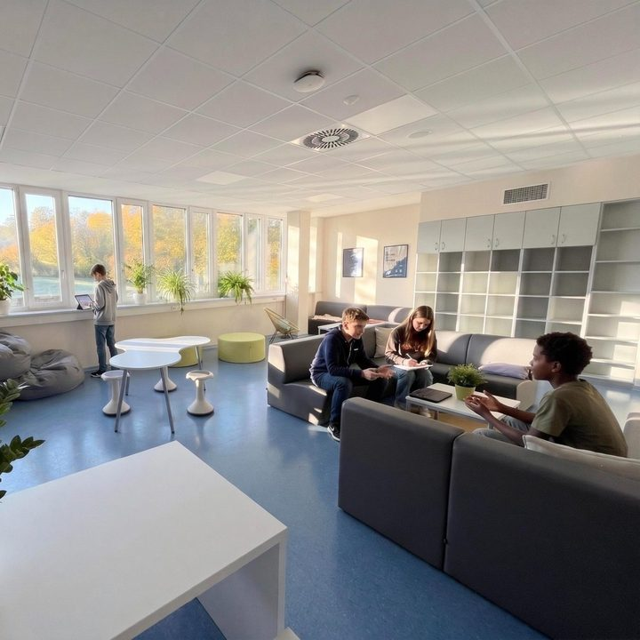

Tag der offenen Tür 2026
Lernen Sie unsere Schule und den Lerncampus kennen. Wir laden alle Viertklässler und ihre Eltern ein.
WeiterlesenHaupt- und Realschule in Lauterbach
Seit 1833 führen wir Kinder aus Lauterbach und vier Grundschulbezirken zu ihrem Abschluss. Heute lernen sie bei uns im Lerncampus, im eigenen Tempo.
Lerncampus entdecken
An der Wascherde 26, 36341 LauterbachSekretariat 7:30–13:00 UhrTelefon 06641 9669-0
Aktuelles
Lernen Sie unsere Schule und den Lerncampus kennen. Wir laden alle Viertklässler und ihre Eltern ein.
WeiterlesenAlles zum Übergang von der Grundschule an die Wascherde, an einem Abend erklärt.
WeiterlesenWir sind offizielle Partnerschule des digitalen Bildungsangebots der Länder.
WeiterlesenLerncampus Wascherde

Lernbüro„Ich lerne in meinem eigenen Tempo.“

Lernwelt„Ich werde beim Lernen begleitet.“

Lernflur„Ich finde meinen Lernort.“

Inputraum„Ich lerne auch digital.“

Co-Working„Ich entdecke meine Stärken.“
Abschlüsse
Wir bereiten auf Ausbildung, Fachoberschule, berufliches Gymnasium und Studium vor.
Praxisnaher Unterricht und individuelle Förderung für einen sicheren Start in die Ausbildung.
Der Weg in die Berufswelt, und mit einem Schnitt von 3,0 oder besser weiter an Gymnasium oder Fachoberschule.
Betriebe kommen zu uns in die Schule. Kontakte entstehen schon im Unterricht.
Ansprechpartner für Schüler und Eltern, gemeinsam mit dem Vogelsbergkreis.
Nähen, Bläser, Lego, Mediothek und Bienen. Engagement, das sich auszahlt.
Kontakt